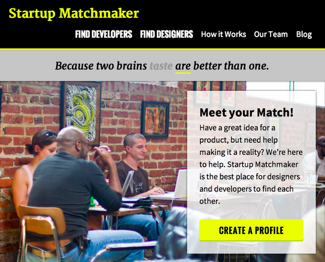
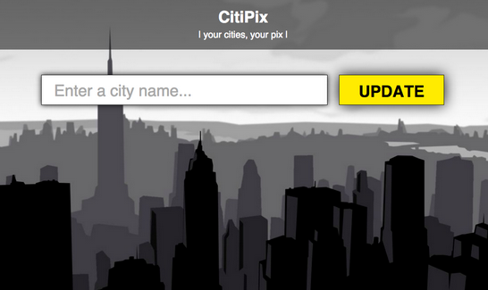

Developed a multi-column layout blog, landing page, and contact forms that render on mobile devices.

Web Developer, Relaxr 2015 - present Developed a multi-column layout blog, landing page, and contact forms that render on mobile devices.
Built web app prototype that allows users to store and quickly retrieve photos using keywords.
Education
- General Assembly — FEWD 2015
- College of Soft Knocks — B.S. 2009
- School of Hard Knocks — 2005 (Honors)